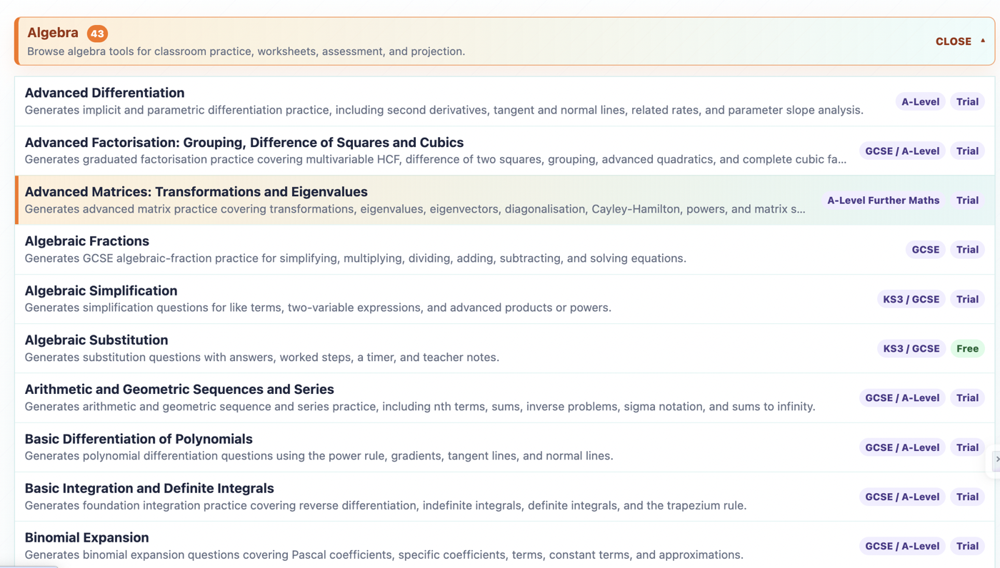
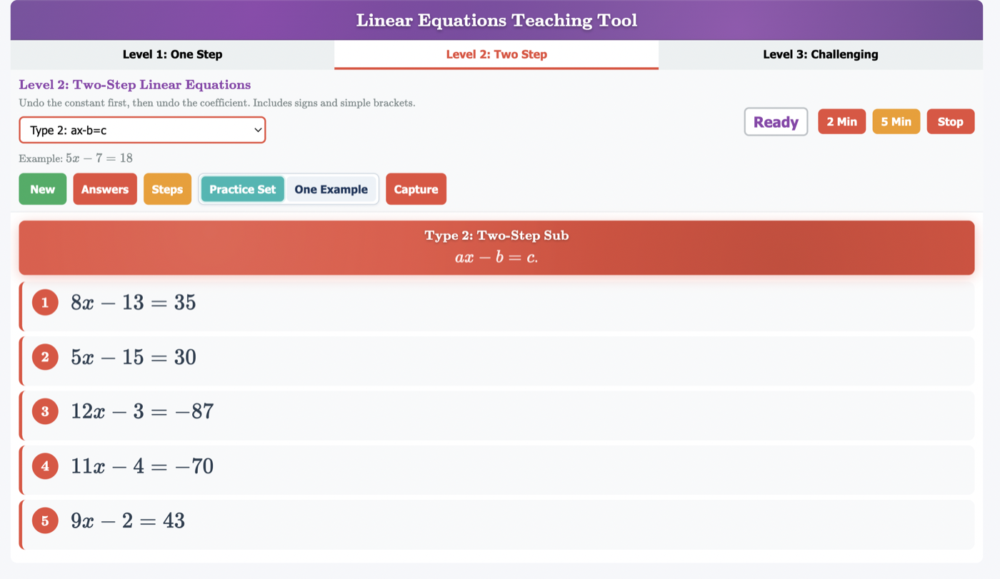
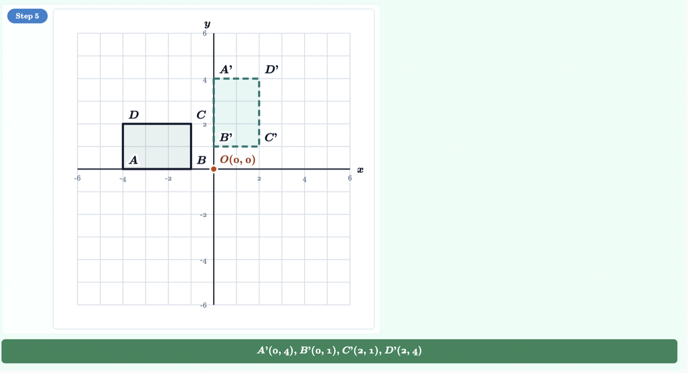
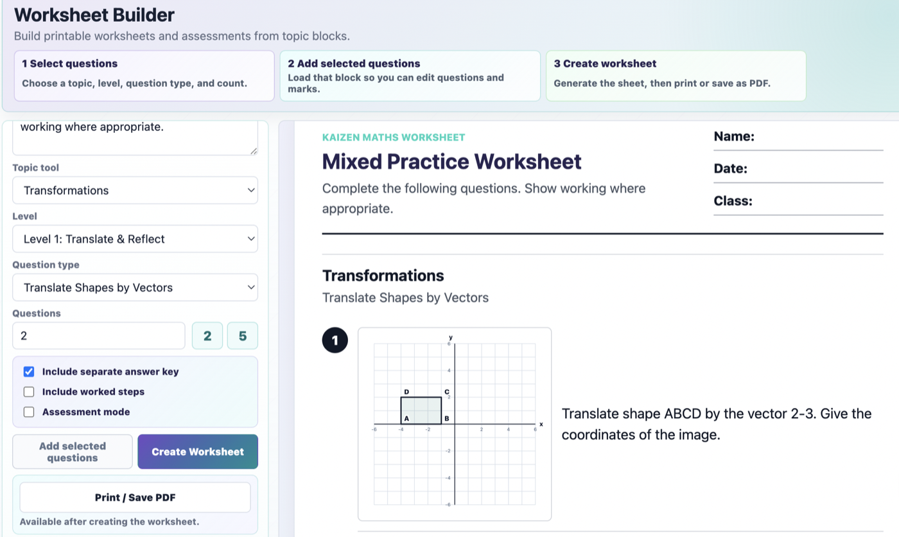
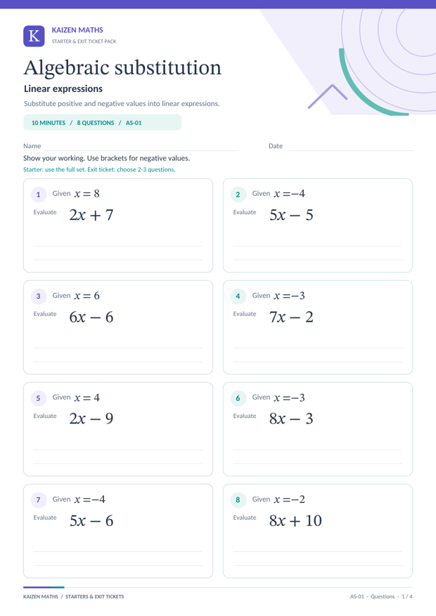

Choose a topic
Open the exact mathematics topic, level, or curriculum area you need.
Choose a topic, generate fresh questions and show each worked step. Print a worksheet or project the same maths for your class, without hunting across scattered sites.
A short walkthrough showing teachers how to choose topics, project questions, use Classroom View, and build teaching resources.





Open the exact mathematics topic, level, or curriculum area you need.
Choose the question type, amount of practice, and whether pupils need worked support.
Create board practice, worked examples, worksheets, quizzes, or assessment-style sets.
Project it, annotate it, print it, or use it for homework, intervention, and follow-up.
See current coverage for UK KS2, UK KS3, GCSE, CSEC, CAPE, Oman GED, Common Core, A-Level Pure, Further Maths, A-Level Statistics, and A-Level Mechanics, with future tagging routes for IGCSE and IB.
Use Classroom View for live modelling, worked examples, checking misconceptions, and guided practice. Teachers can now annotate with pen, highlighter, eraser, undo, and clear controls while keeping the same question set on screen.
Move from topic choice to usable classroom material quickly, without hunting across scattered sites.
Use worked examples, revealable steps, diagrams, and classroom displays to model methods clearly.
Generate fresh questions by topic, level, question type, and purpose for different groups.
Use focused practice, pupil tasks, worksheets, and assessment evidence to revisit gaps.
Build a shared resource structure your department can use for planning and intervention, while preserving teacher choice and professional judgement.
Reduce the repeated workload of searching, formatting, and rebuilding mathematics resources from scratch.
A teacher-built mathematics workspace for questions, worked examples, worksheets, assessments, classroom displays, and pupil tasks.
A proposed teacher development programme combining Kaizen Maths access with online training, coaching, mentoring, and sustained follow-up.
Teachers can explore the resource. Schools can express interest. Funders and partners can discuss support for programme delivery.
The initial pilot concept focuses on ten schools in Jamaica and approximately thirty mathematics teachers. This first version is planned as an online programme, with an online launch orientation, six weeks of initial online professional development, online mentoring, and 12 months of follow-up. In-person training or school visits may be considered later if funding allows.
Use Kaizen Maths independently for lessons, worksheets, practice, homework, assessment, and classroom modelling.
Use Make It Count to connect the resource with online training, coaching, implementation support, and follow-up.
Discuss funding, sponsorship, pilot support, professional development delivery, or school partnerships.
Select exactly the topic and level a learner needs, then regenerate fresh practice for lessons or homework.
Schools can express interest in using Kaizen Maths or joining a future Make It Count programme. Funders, sponsors, and delivery partners can discuss how to support pilot development, online training, coaching, and school implementation.
Sign in with Google for a 30-day teacher trial. It includes the topic generators, worked solutions, Worksheet Builder and Exam & Assessment Builder. Tutor Workspace requires paid access. Pupil tasks require an enabled school or tutor organisation.
Full workspace access ends and free sample tools remain available. The trial does not take payment details or start a paid subscription automatically. Choose a subscription or join an authorised school licence to continue.
Teacher access is £9.99 per month or £89 per year. Both include the same teacher tools. Annual billing costs £30.88 less than 12 monthly payments. Paid subscriptions renew until cancelled through Stripe Billing Portal.
Check the Curriculum Alignment and Coverage Map pages for the topics available across UK KS2, KS3, GCSE, CSEC, CAPE, Oman GED, Common Core and A-Level routes. These are topic mappings, not exam-board endorsement or a guarantee of complete specification coverage. Check a sample against your scheme of work before teaching.
Google and Supabase support teacher sign-in and account access. Stripe handles subscription payments; Kaizen Maths does not store card numbers. Pupils do not need accounts. Where pupil tasks are enabled, aliases, responses and scores are stored for the teacher; do not enter pupil names or other identifying details. Read Trust & Privacy for more information.
School access starts from £299 per year for 1–5 teachers. The existing school offer lists 6–15 teachers from £499 per year; larger groups are quoted individually. Confirm teacher numbers, access dates and any training or pupil-module arrangements before purchasing. Make It Count is a proposed programme, subject to funding and agreement, rather than an included subscription benefit.
Built for adult maths teachers and tutors to prepare and explain mathematics. This is not a pupil self-study subscription or a replacement for your teaching judgement.
See teacher and school prices · Compare with Dr Frost Maths · Compare with Mathletics · Our story